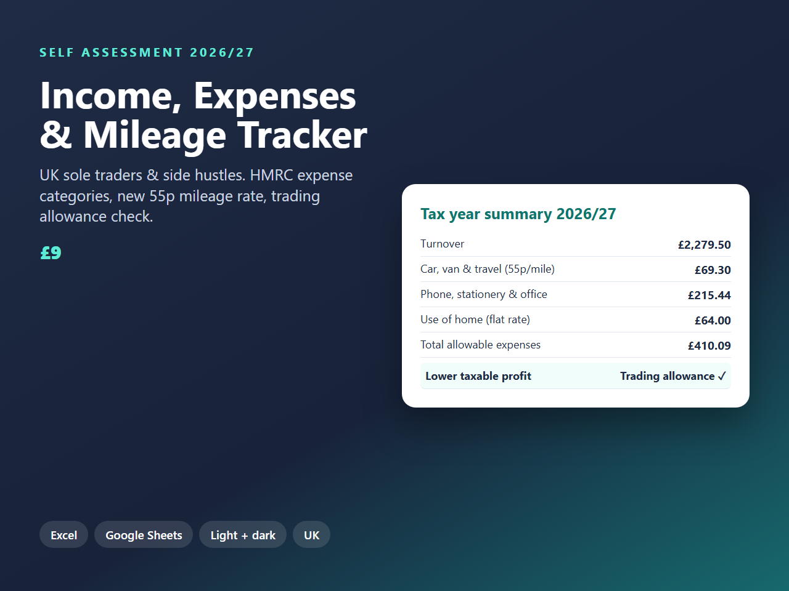

Self-Employed Income, Expenses & Mileage Tracker 2026/27
£9
Log income, expenses and business miles. Totals by HMRC expense category for your Self Assessment return, the 55p mileage rate, use-of-home flat rate and a £1,000 trading allowance check.
- Tax year 6 Apr 2026 – 5 Apr 2027
- HMRC expense categories
- Mileage at 55p / 25p
- Excel + Google Sheets